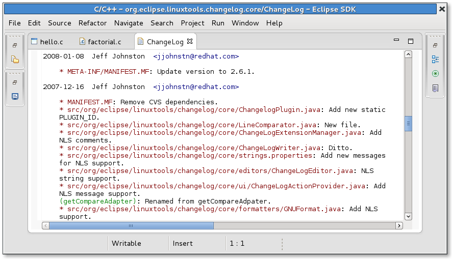

| ChangeLog Editor | ||
|---|---|---|
|
|
|
|
| ChangeLog Preferences | ChangeLog Plug-in Functions | |
The ChangeLog plug-in provides a special editor for ChangeLog files. This editor has syntax highlighting and provides a
file-hyperlink feature. To use the
file-hyperlink feature, hold the
Ctrl key and click on any filename to open the corresponding file.

You can also copy all
ChangeLog file changes (since the last check-in to the repository) to the clipboard. To do so, first select the
ChangeLog file containing changes since the last commit and, then, use the key combination
Ctrl+
Alt+
v to copy those changes to the clipboard. This is useful if you wish to use the ChangeLog entry as your comment when you perform a commit.
|
|

|
|
| ChangeLog Preferences | ChangeLog Plug-in Functions |